The OpenShift path uses Security Profiles Operator (SPO) to install Blastwall SELinux workload profiles and custom Security Context Constraints (SCCs) to move selected pods into those profiles. It is workload confinement, not the RHEL/IdM login-domain path.
RHEL managed hosts use blastwall_u:blastwall_r:blastwall_t:s0 for SSH automation sessions. OpenShift pods keep the native pod identity shape and run as system_u:system_r:<spo-type>:s0:cX,cY. The default class uses blastwall_.process on the validated OCP 4.20 lab; the nested class uses blastwallnested_.process.
Two BlastWall Workload Classes
blastwall is the standard class and should remain the default recommendation. It denies workload-created user namespaces along with xfrm, RxRPC, AF_ALG, BPF, packet socket, and io_uring entry points.
blastwall-nested is the explicit exception class for workloads that need pod-level user namespace behavior, such as rootless build or nested-container workflows. It omits only the user_namespace create deny. It still denies xfrm, RxRPC, AF_ALG, BPF, packet socket, and io_uring, so it is not a general escape hatch.
Nested workloads must opt in with the separate blastwall-nested-runner service account, openshift.io/required-scc: blastwall-nested, and spec.hostUsers: false. The standard service account is not bound to the nested SCC.
Control Model
SPO owns policy delivery. The SCC owns workload selection. OpenShift keeps namespace MCS categories so two namespaces do not collapse into the same SELinux level. Blastwall subtracts risky kernel surfaces from the selected workload type.

| Part | Role | Evidence |
|---|---|---|
| SPO | Installs sibling RawSelinuxProfile objects: blastwall and blastwallnested. The latter is the enforcing profile resource for the public blastwall-nested class. | Both profiles report Ready, and probe pods show the expected workload type. |
| SCC | Requires the matching profile type through blastwall-confined or blastwall-nested. | The pod annotation shows the selected SCC. |
| Service account RBAC | Limits who can use each SCC. | oc auth can-i use succeeds only for the intended service account and SCC pair. |
| Safe probes | Exercise entry points without exploit behavior. | PASS, BLOCKED, SKIP, or FAIL output per surface. |
Why SPO
This policy should move faster than worker OS image changes. A custom RHCOS image would turn a workload confinement adjustment into an image lifecycle problem. MachineConfig-delivered SELinux policy has the same mismatch: it treats policy as node configuration instead of a Kubernetes-managed workload profile.
SPO is the right shape for this use case because the profile becomes a cluster object. Operators can review it, render it as part of the Day 2 pipeline, apply it through normal cluster change control, and validate it with a pod that uses the same type as the protected workload.
What Is Denied
The standard OpenShift profile mirrors the current Blastwall deny posture for workload type blastwall_.process: AF_ALG, BPF, capability2 bpf, packet sockets, user namespace creation, io_uring, NETLINK_XFRM, and AF_RXRPC. The nested profile carries the same denies except for user namespace creation.
The profile uses CIL optional blocks around object classes that can differ by kernel and policy version. The repository keeps neverallow guards where the target policy compiler supports them.
Apply The Profile
Verify the installed SPO schema first. Blastwall uses RawSelinuxProfile because the inherited container profile and deny rules must compile in the same raw CIL block.
The governed source for the OpenShift policy is in openshift/spo. For normal Day 2 rollout, render that source in AAP and apply the returned bundle artifact to OpenShift.
oc explain rawselinuxprofile.spec --api-version=security-profiles-operator.x-k8s.io/v1alpha2
oc apply -f /tmp/blastwall-spo-crs.yaml
oc -n blastwall-spo wait \
--for=condition=ready rawselinuxprofile/blastwall \
--timeout=180s
oc -n blastwall-spo wait \
--for=condition=ready rawselinuxprofile/blastwallnested \
--timeout=180s
oc -n blastwall-spo get rawselinuxprofile blastwall \
-o jsonpath='{.status.usage}{"\n"}'On the validated OCP 4.20 lab, status.usage reports blastwall.process and blastwallnested.process, while admitted pods run as blastwall_.process and blastwallnested_.process. The nested public class remains blastwall-nested, but the profile resource avoids a hyphen because the validated SPO/CIL path did not enforce deny rules on the generated hyphenated type. The pod context is the source of truth.
Bind Workloads
The standard SCC is named blastwall-confined. The nested SCC is named blastwall-nested. Both avoid a fixed SELinux level, deny host namespaces and hostPath, drop all capabilities by default, deny privilege escalation, and use runtime/default seccomp. The nested SCC also requires pod-level user namespace behavior with userNamespaceLevel: RequirePodLevel on OpenShift versions that support that field.
The nested SCC uses RunAsAny for UID and group strategy fields because OpenShift interprets those IDs inside the pod user namespace. It does not grant privileged containers, host namespaces, hostPath, extra capabilities, or privilege escalation.
oc auth can-i use scc/blastwall-confined \
--as system:serviceaccount:blastwall-workloads:blastwall-runner \
-n blastwall-workloads 2>/dev/null
oc auth can-i use scc/blastwall-nested \
--as system:serviceaccount:blastwall-workloads:blastwall-nested-runner \
-n blastwall-workloads 2>/dev/null
oc apply -f openshift/spo/examples/blastwall-protected-deployment.yaml
oc apply -f openshift/spo/examples/blastwall-nested-deployment.yaml
oc -n blastwall-workloads get pods \
-l app.kubernetes.io/name=blastwall-demo \
-o jsonpath='{range .items[*]}{.metadata.name}{" scc="}{.metadata.annotations.openshift\.io/scc}{"\n"}{end}'
oc -n blastwall-workloads get pods \
-l app.kubernetes.io/name=blastwall-nested-demo \
-o jsonpath='{range .items[*]}{.metadata.name}{" scc="}{.metadata.annotations.openshift\.io/scc}{" hostUsers="}{.spec.hostUsers}{"\n"}{end}'
oc -n blastwall-workloads exec deploy/blastwall-demo -- \
sh -c 'id -Z 2>/dev/null || cat /proc/self/attr/current'The SCC object is cluster-scoped, but the grant is tested through a namespaced service account identity. The command keeps the namespace context for the RBAC check and redirects the OpenShift SCC scope warning away from the operator-facing proof.
The standard pod should report a context containing blastwall_.process. The nested pod should report blastwallnested_.process and expose pod-level user namespace maps through /proc/self/uid_map and /proc/self/gid_map.
Validate Nodes
The validation harness uses a UBI Python image and safe entry-point probes. It does not run exploit code. The strongest evidence is the combination of profile readiness, SCC admission, pod SELinux context from id -Z or /proc/self/attr/current, and blocked probes from the selected Blastwall workload type.
openshift/spo/scripts/validate-blastwall-spo-nodes.sh --class both --all
openshift/spo/scripts/validate-blastwall-spo-nodes.sh --role worker
openshift/spo/scripts/validate-blastwall-spo-nodes.sh --class nested --selector 'node-role.kubernetes.io/infra='| Result | Meaning |
|---|---|
PASS | The pod ran under the expected type and all protected probes were blocked or acceptably skipped. |
BLOCKED | The probe reached the entry point and received EPERM or EACCES. |
SKIP | The feature, node class, or scheduling policy is not available for this check. |
FAIL | The pod did not run under the expected class type, or a protected entry point succeeded. |
Do not read every EPERM as SELinux proof by itself. Capabilities, SCC, seccomp, and kernel availability can also shape probe results. The context and admission evidence are part of the claim.
Day 2 Pipeline
The policy pipeline now has two governed outputs: the RHEL/IdM policy RPM and the OpenShift/SPO CR bundle. A single deny-scope decision can become blastwall_t policy for SSH automation and two OpenShift workload classes: blastwall and blastwall-nested.
In AAP, the source manifests are read from Git at openshift/spo. The render node generates a versioned blastwall-spo-crs.yaml bundle in the job .artifacts map, and that artifact is then applied to OpenShift as part of cluster change control.
bundle_id="$(awx workflow_job_nodes list --workflow_job "${workflow_id}" -f json \
| jq -r '.results[] | select(.identifier == "render_spo_policy_crs") | .summary_fields.job.id')"
awx jobs get "${bundle_id}" -f json \
| jq -r '.artifacts.blastwall_spo_bundle_yaml' \
> /tmp/blastwall-spo-crs.yamlThen apply only that versioned artifact to the cluster:
oc apply -f /tmp/blastwall-spo-crs.yamlLimitations
- RawSelinuxProfile and SCC schema details can vary by SPO and OpenShift release. Confirm
oc explain rawselinuxprofile.spec --api-version=security-profiles-operator.x-k8s.io/v1alpha2andoc explain scc.userNamespaceLevelbefore applying in a production cluster. - Master, control-plane, and infra validation depends on scheduling policy and taints. Skips are expected when the cluster is not configured to run this test pod there.
- The SCC chooses a workload type; it does not make the pod privileged and it does not replace ordinary image, SCC, seccomp, or network controls.
- Fleet governance objects are outside this OpenShift/SPO bundle.